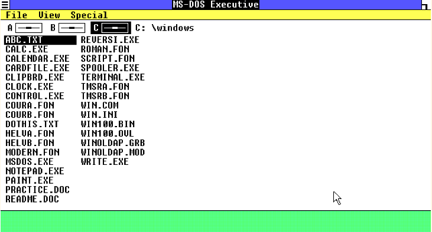

Windows 1.0
Windows 1.0 foi o primeiro da família Windows. Inicialmente, o Windows não era um sistema operacional próprio, mas sim uma interface bidimensional entre o DOS e o usuário. Suas funcionalidades eram relativamente limitadas.
História
Foi lançado a versão final em 20 de Novembro de 1985, apesar de que no ano de 1984 ter sido lançado as versões Alpha, Beta e Developer Release 5. Era necessário o MS-DOS 2.0 ou superior, 256 kB de RAM e um disco rígido (naquela época a maioria dos computadores não possuía disco rígido, sendo usado disquetes para armazenamento. O MS-DOS 1.0, por exemplo, rodava sobre um disquete.). Naquele tempo, o MS-DOS só conseguia suportar 1024 kB de aplicações. Era uma primeira tentativa de criar um sistema multitarefa. Foi instalado em computadores IBM XTs que tinham apenas 512 kB de memória, ocupava praticamente toda a memória do computador. Inicialmente, ele foi lançado em 5 disquetes de 5.1/4" de 360 kB. Continha o jogo Reversi, um Calendário, Bloco De Notas, Calculadora, Relógio, o CardFile, o Microsoft Windows Writer, o Paint e programas de comunicação. Não possuía sobreposição de janelas (e sim os comandos "Zoom" e "Iconize"). Possuía muitos erros principalmente na versão 1.0 Premiere Edition e na versão 1.01.
Interface
O Windows 1.0 trouxe uma interface com cores vibrantes ao usuário, porém somente possível sua reprodução em monitores com cores, pouco comuns à época de seu lançamento. Foi também o primeiro sistema da Microsoft a utilizar Mouse, janelas e ícones. Nesta versão ainda não havia sobreposição de janelas, apenas comandos de "Zoom" para maximizar e "Iconize" para minimizar.
Sobre o PowerPoint e Excel
Em 1985 a Microsoft e a IBM assinam acordo para desenvolvimento conjunto de um futuro sistema operacional, no mesmo ano lança o Microsoft Windows 1.0. Em 1987 a Microsoft compra o programa de apresentações PowerPoint e lança a planilha eletrônica Excel.
Imagens
Tela de início do Windows 1.01 Jogo Reversi Calendário Bloco de Notas Calculadora  Lista de Programas Relógio Paint MenuWindows 2.x
O Windows 2.x foi uma interface gráfica do utilizador baseada em ambiente de funcionamento da Microsoft distribuído com o software para scanners da Hewlett-Packard. Foi lançado em 9 de dezembro de 1987 e substituído, posteriormente, pelo Windows 3.0 em 1990. Ele era apresentado em 9 disquetes de alta densidade de 5.1/4" de 360 KB, em 5 disquetes de baixa densidade de 3.1/2" de 720 KB ou ainda em 4 disquetes de alta densidade de 5.1/4" de 1,22 MB. O Windows 2.0 praticamente possui a mesma interface do Windows 1.0, com a diferença de ter mais recursos, ferramentas e cores. Os computadores daquela época eram muito lentos quando estes utilizavam uma interface gráfica de boa qualidade. Permite a sobreposição de janelas e estas podem maximizar e minimizar. Existe a versão Windows 2.0/386, otimizada para microprocessadores 386 e similares. Para instalar o Windows 2.X era necessário ao menos 512 KB de memória RAM e um disco rígido. Foi o primeiro Windows que dava suporte ao VGA e aos computadores PS/2.
Versões
Windows 2.1/286 foi lançada para aproveitar todos os recursos dos microprocessadores 286
Windows 2.1/386 foi lançada para aproveitar todo o potencial dos microprocessadores 386.
Existe uma outra versão da família Windows 2.xx, o Windows 2.11, que foi lançada em Março de 1989, com pequenas mudanças em gerenciamento de memória, melhor impressão e drivers Postscript
Windows 3.x
Os ambientes operacionais Windows 3.x da família Microsoft Windows com recurso de interface iconográfica e janelas, lançados entre 1990 e 1996. A versão 3.0 foi a primeira versão mais amplamente usada do Windows, permitindo que a empresa Microsoft competir com o sistema Macintosh da empresa Apple Inc., e com o computador Amiga da empresa Commodore Business, que utilizavam uma GUI (Interface Gráfica do Utilizador).
O Windows 3.x e versões, não eram propriamente sistemas operacionais, pois tinham como pré-requisito a existência de uma versão do sistema Microsoft DOS (Disk Operating System) instalada no computador, esse sim sendo o sistema operacional do computador.
Versões
Windows 3.0
O Windows 3.0 foi lançado em 22 de Maio de 1990.
Era usado em computadores 286 e 386. A versão 3.0 foi o primeiro sucesso amplo do Windows. Ao contrário das versões anteriores, ele era uma versão completamente nova, porém era um Ambiente Gráfico que rodava sobre o sistema MS-DOS
Nessa época a maioria dos computadores usavam MS-DOS. Ao ligar o computador, iniciava-se esse sistema operacional, para então iniciar o ambiente gráfico Windows, executando o comando "WIN" no prompt do MS-DOS, ou acrescentando o código "C:\Windows\Win" no arquivo de sistema Autoexec.bat para a sua execução automática
Substituiu-se a aplicação MS-DOS Executive pelo Gerenciador de Programas, Gerenciador De Impressão e Gerenciador de Arquivos. Programa que simplificavam as aplicações e tornava o sistema bem mais prático. Desenvolveu as redes locais (LANs). Melhorou bastante a interface, a gestão da memória e o sistema multitarefa, e incluiu o suporte às fontes True Type. Conseguiu ultrapassar o limite de 1 MB do MS-DOS e permitiu a utilização máxima de 16 MB de aplicativos. Naquela época era o único possível de compatibilizar todos os programas das versões anteriores. Utilizava o processador Intel 80286 e o Intel 80386. Foi apresentado em 7 disquetes de 3,5" de baixa densidade de 720 KB, em 4 disquetes de 5.25" de alta densidade de 1,22 MB e em 4 disquetes de 3,5" de 1,44 MB de capacidade. Também existe a versão 3.00A, que foi lançada em 31 de Outubro de 1990 para corrigir erros da versão anterior. Uma versão baseada no 3.00A foi chamada de "Windows - graphical environment with Multimedia Extensions 1.0", contava com muitas novidades, tais como: leitor de CDs, um novo relógio, gravador de som, animações de proteção de tela e mixers de som. Diferentemente das versões comuns, que rodavam sobre processadores 8086 e 8088, este requeria 286 ou superior. Era vendido por fabricantes de computadores em conjunto com o PC, nunca foi vendido separadamente.
Windows 3.1
O Windows 3.1 (originalmente sob o nome de código Janus) foi lançado em 18 de Abril de 1992. Ele era apresentado em 8, 9 disquetes, 10 ou 14 de alta densidade de 3,5" de 1.44 MB, com a quantidade de disquetes dependendo do idioma: em português e na maioria dos idiomas latinos e germânicos era vendido em 9 disquetes, em inglês, 8, em idiomas eslavos, magiar e finlandês (fino-úgricos), 10, e em japonês e chinês, 14. Tinha softwares para multimídia e fontes True Type (aumenta muito o número de tipos de letras disponíveis) e era mais estável do que o Windows 3.0. Nesta versão permitiu o uso de um maior número de línguas de trabalho e outros sistemas alfabéticos, como o sistema japonês e chinês. O jogo Campo Minado substituiu o Reversi, embora se você estivesse atualizando do Windows 3.0, o jogo Reversi continuaria lá. Foi a segunda versão em russo, a primeira foi a 2.11, lançada ainda durante o regime soviético, em 1989.
Windows 3.11
Em 31 de dezembro de 1993, a Microsoft lançou uma atualização para o Windows 3.1, conhecida como Windows 3.11. Assim, o Windows 3.11 não é uma versão autônoma do Windows, mas sim uma atualização de software do Windows 3.1, bem como pacotes de serviço moderno Windows. Para aqueles que não possuíam o Windows 3.1, a versão de Windows 3.11 estavam disponíveis no momento.
Windows 3.2
Em janeiro de 1994, a Microsoft lançou uma versão em chinês simplificado do Windows para o mercado chinês. O sistema atualizado identificado como Windows 3.2. Assim, o Windows 3.2 é a versão chinesa do Windows 3.1. A atualização limitou-se a esta versão, em que fixa apenas as questões relativas ao complexo sistema de escrita da língua chinesa.
Windows 3.2 era geralmente vendidos por fabricantes de computadores com uma versão disco de dez anos de MS-DOS, que também tinha caracteres em chinês simplificado da produção de base e alguns utilitários traduzidos.
Windows para Workgroups
"Windows for Workgroups" é uma extensão que permitia que os usuários compartilhem seus recursos e ao pedido dos outros sem um servidor de autenticação centralizado. Foi utilizado o protocolo SMB sobre NetBIOS.[5] A primeira versão estendida "For Workgroups" foi lançada em outubro de 1992.
 Área de tranferência do Windows 3.0
Tela de Configurações de máquina do Windows 3.0
Tela de acessórios do Windows 3.0
Tela de Jogos do Windows 3.0
Tela do jogo Paciencia do Windows 3.0
Tela do jogo Reversi do Windows 3.0
Área de tranferência do Windows 3.0
Tela de Configurações de máquina do Windows 3.0
Tela de acessórios do Windows 3.0
Tela de Jogos do Windows 3.0
Tela do jogo Paciencia do Windows 3.0
Tela do jogo Reversi do Windows 3.0